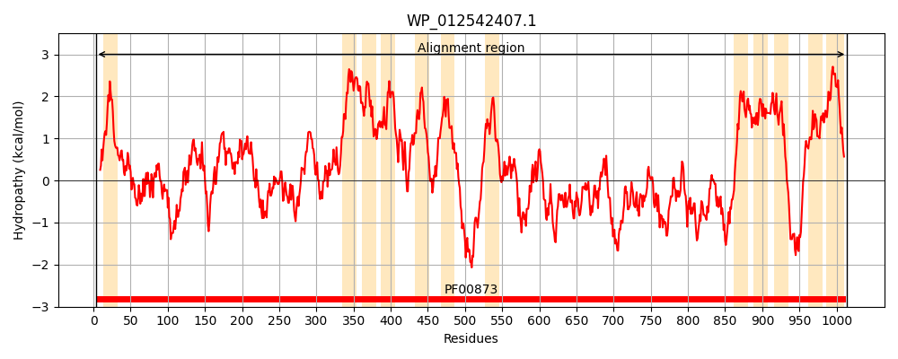
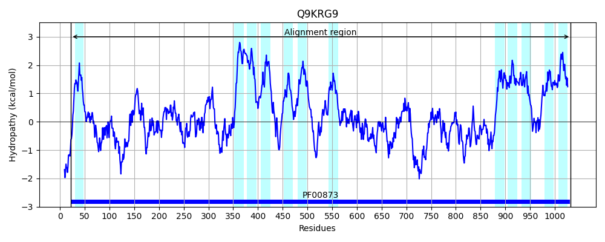
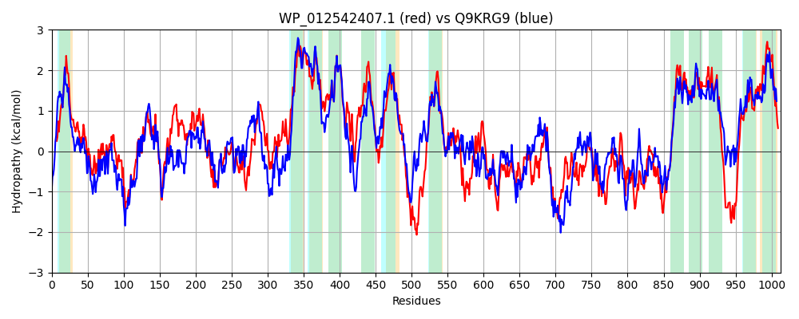

Hit Accession: Q9KRG9
Hit TCID: 2.A.6.2.38
Hit Description: gnl|BL_ORD_ID|18393 gnl|TC-DB|Q9KRG9|2.A.6.2.38 Transporter, AcrB/D/F family OS=Vibrio cholerae GN=VC_1673 PE=4 SV=1
Mach Len: 1013
e:0.000000
Query TMS Count : 12
Hit TMS Count: 12
TMS-Overlap Score: 10.800000
Predicted Substrates:CHEBI:27780;detergent
BLAST Alignment:
Score: 2611 , Bit scores: 1010 bits, E-value: 0.0e+00, Alignment length: 1013, Percentage identity: 49
Query: 3 ISRQFINNPTRVWLAILLLGVGGLFALLNIGRLEDPAFTIKTAVIVTHYPGASAQQVEEEVTLPLENAIQQLPSLDNVSSISSNGLSQITVNIASQYHSSELPQIWDELRRRVGDASRLFPPGVVPSFVNDDFGDVFGFFFAISGDSFTNPELVRYAEQLRRELVLVPGVGKVAIGGAIPQQINVDISLAKMAARGITLNQLAAILTRLNVVSSAGEIRAGSESIRLHPTGEFQNIDELGDLLVSPHGASATTRLRDIATLSRGLTDSPSSIYHANGRQAVTMGVSFIPGVNVIDVGHALEARLQQMAADKPAGIDIAIFYDQAAEVAHSVNGFITNFLMALAIVVGVLLVFMGVRSGIIIALSLALNVLGTLLIMYIWGIELQRISLGALIIALSMLVDNAIVIVEGVLIARQQGSPLLGAINYVIRRSALPLLGATVIAILAFAPIGLSQDSTGEYCKSLFQVLLISLMLSWFSALTITPVLIKWWLFKNAPSAEAPKEKADPYRGRFYRGYQQTLRILLQQKTLTLVLMGALLAGAIWGFTFVRQNFFPSSNTPIFFVDLWLPYGTDINATEQMTRDIERSIASQPGVATTVSTIGQGSMRFILTYSGQRQYSNYAQIMVRMDDQRSIAPVTRHVEAWIARNYPQVNASTKRIMFGPSGDSAIEVRIKGPDPDTLRALASQVGDILAADPATDSVRNDWQNRSKVIRPQYSLALGRELGVDKQDIDSALEMNFSGSRAGLYREGADLLPVIVRPPEAERQDANHLNNVLVWSQSRQQYIPLSNVIHGFSLEWEDPLILRRDRTRVLTVQTDPSPQSGQTSGDILARVKPRIDALTLPHGYRIEWGGDAENSSEAQQGLFTTLPLGYLVMFIITVLMFSSLKNAVAIWLTVPLALIGVTPGFLLTGIPFGFMALIGLLSLSGMLIRNGIVLVEEIE-QQKQEKDQRQAIIDAATSRLRPILLTAFTTVLGLAPLLRDVFFQSMAVVIMFGLAFATVLTLLVLPVIYACFHH 1014
++ FINN W+ L+ +GG A N+GRLEDPAFTIK A++VT YPGA+ QQVEEEVT PLE AIQQL +D V+SISS GLSQITV + + Y +LPQIWDELRR+V D PPGV P V DDFGDV+G A++G+ ++ EL+ Y + LRREL L+ GV KV++ G +Q+ ++IS+ +++ GI+ + +L+ N+VS AG IR GSE IR+HPTGEF ++++LGDL++S GA LRD+A + RG + PS++ NG+ A+ +GVSF GVNV++VG + RL ++ +P GIDIA Y Q EV SV+GF+ + A+AIV+ VLL FMG+RSG++I L L L VLGT + M + I+LQRISLGAL+IAL MLVDNAIV+VEG+LI Q+G L A ++ ++ PLLGATVIA+ AFAPIGLS+D+TGEYC +LF VLLISLMLSWF+A+++TP LF A A E++DPY+G + Y++ L +++ LT+ ++ LA +++GFT V+Q FFPSS TP+F VD+W+P GTDI AT+ + ++E+ +++Q V + +T G+G RF+LTYS ++ Y+ Y +I R+ D + +A + A + YPQ+N K+I GP G + IE RI G DP LR++A+QV D++ ADP ++R+DW+ R+KV+ PQ++ + R G+ K D+D L M+FSG G+YR+G L+P++ R PE ER D ++ + +WS + +YIPL V G+ + WEDPLI+R++R R+LTV DP +T+ + R++P+I+A+ LP GY +EWGG+ E+S +A+ LF T+PLGYL MF+ITV +F+S+K ++ +WLTVPLA+IGVT G L PFGFMAL+G LSLSGML++NGIVL+++IE + KD A++DA+ SR+RP+ + A TT+LG+ PLL D+FF+ MAV IMFGL FATVLTL+V+PV+Y FHH
Sbjct: 22 VAAYFINNRVISWMVSLIFLIGGTAAFFNLGRLEDPAFTIKDAMVVTSYPGATPQQVEEEVTYPLEKAIQQLTYVDEVNSISSRGLSQITVTMKNNYGPDDLPQIWDELRRKVNDLKGALPPGVNPPLVIDDFGDVYGILLAVTGEGYSYKELLDYVDYLRRELELIDGVSKVSVSGQQQEQVFIEISMKRISTLGISPQTVFNLLSTQNLVSDAGAIRIGSEYIRIHPTGEFDDVEKLGDLILSERGAQGLIYLRDVAEVKRGYVEVPSNVITFNGKLALNVGVSFAQGVNVVEVGQRFDRRLAELKYQQPIGIDIAEVYSQPKEVDKSVSGFVVSLGQAVAIVIIVLLFFMGLRSGLLIGLILLLTVLGTFIFMQYFKIDLQRISLGALVIALGMLVDNAIVVVEGILIGTQKGRTRLQAATDIVTQTKWPLLGATVIAVTAFAPIGLSEDATGEYCGTLFTVLLISLMLSWFTAISLTPFFAD--LFFRGQKAPASGEESDPYQGFIFVVYRRFLEFCMRRAWLTMGVLVLGLAASLYGFTKVKQAFFPSSTTPMFMVDVWMPEGTDIRATDAILLELEKWLSAQESVDSVTTTAGKGLQRFMLTYSPEKSYAAYGEITTRVTDYQQLAALMARFRAHLDARYPQINYKLKQIELGPGGGAKIEARIVGSDPTVLRSIAAQVMDVMYADPGAYNIRHDWRERTKVLEPQFNESQARRYGITKADVDEFLAMSFSGKTIGVYRDGTTLMPIVARLPEEERVDIRNIEGMKIWSPALSEYIPLQQVTLGYEMRWEDPLIVRKNRKRMLTVMADPDLLGEETAATLQQRLQPQIEAIPLPPGYFLEWGGEYESSGDAKASLFKTMPLGYLFMFLITVFLFNSVKESLIVWLTVPLAVIGVTTGLLALNTPFGFMALLGFLSLSGMLLKNGIVLLDQIEIEMHSGKDPYLAVVDASLSRVRPVCMAAVTTILGMIPLLPDIFFRPMAVTIMFGLGFATVLTLIVVPVLYRLFHH 1032 | Protein Hydropathy Plots: | |
|---|---|
|  |  |
Pairwise Alignment-Hydropathy Plot: | |
|  | |